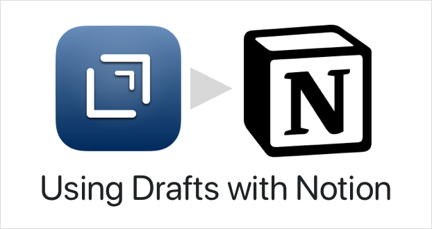

Using Notion with Drafts
NOTE: Notion integration requires Drafts v31 or greater. The Notion API used for integration is still in beta, as such aspects of this functionality may change or break and Notion finalizes their API.
Notion is an online project management and information system. Drafts currently two ways to integrate with Notion:
- Notion action step. Can create new sub-pages, or append to existing pages, as plain text or as to-do lists.
-
Notionscript object: Provides arequestmethod which allows you to script calls to the full Notion API, while providing automatic OAuth authenticate flow.
The action step provides a basic, easy to approach way to get your data from Drafts to Notion. Scripting supports advanced integration, for users needing to work with databases and other block types in Notion.
Notion Authentication and Permissions
Like most services Drafts integrates with, Notion uses the OAuth standard for authentication. The first time you use an action that integrates with Notion, you will be redirected to the Notion website and asked to log in and authorize Drafts to use your account.
When authenticating, Notion has an additional step of selecting specific pages in Notions which the integration will be granted permissions to access. It is recommended you give Drafts permissions only to the pages you plan to target with actions.
{kind=link}
After you have authorized Drafts, you can add and remove page permissions in the Notion interface:
- Navigate to the Notion Page you wish to add to the Drafts integration.
- Select “Share”, then “Invite” and select the “Drafts” integration to allow it permission to use the page.
Permissions are inherited, so granting Drafts permission to access a page or workspace, gives it permission to access child elements of that item.
If “Drafts” does not appear as an option when to invite in your share page, make sure you have run a Notion action in Drafts and successfully authenticated to the correct workspace in Notion.
Notion Action Step
The Notion action step can add text or to-do lists to pages in Notion. Aspects of this step may change, but it’s a start. To get started, install an example action:
By default, these examples ask you to select a Notion page as a target each time they are run. They can also be configured to target a specific page by page ID. See next section on obtaining IDs, and the step documentation for further details on options available.
Obtaining Notion Page IDs
To configure action steps to target a specific page in Notion, you can use the “Select” button in the action step configuration, or obtain a specific Page ID from Notion.
{kind=link}
To get a page ID:
- Navigate to the page in the Notion website or app.
- Use the “Share” button, and “Copy Link” to get the unique URL for the page.
- The Page ID is the string of numbers and letters at the end of the URL.
Once you obtain that page ID, you can paste it in an action and change the action to “Assign” the target page.
Be sure the page you wish to target has been invited to the “Drafts” integration (see permissions section above) or the action will fail.
Using the Notion API in Script
For advanced users, Drafts also provides a Notion Script object that allows you to make requests directly against the Notion API. Any API calls can be used, see Notion API docs for information on available methods. This object may add convenience methods for some functions, but right now only has a single request method that allows for arbitrary calls against the Notion API. Example action:
Notion and Markdown/Rich Text/HTML
Notion stores text in its own structured block format. In their own apps and web version, they have tools that convert between Markdown pasted into the interface, and this native block format.
At this time, Notion has not added the ability to convert between this native block format and HTML or Markdown to the capabilities of the API.
It is possible to construct Notion blocks using JavaScript in Drafts (they are just complex JSON objects), and pass those values to the API, but due to the complexity of the format, we do not have any automated tools to do this conversion.
We are hoping Notion adds this capability before the API is final, and we will certain support it to provide a smoother way to pass Markdown and/or HTML to Notion if they do.